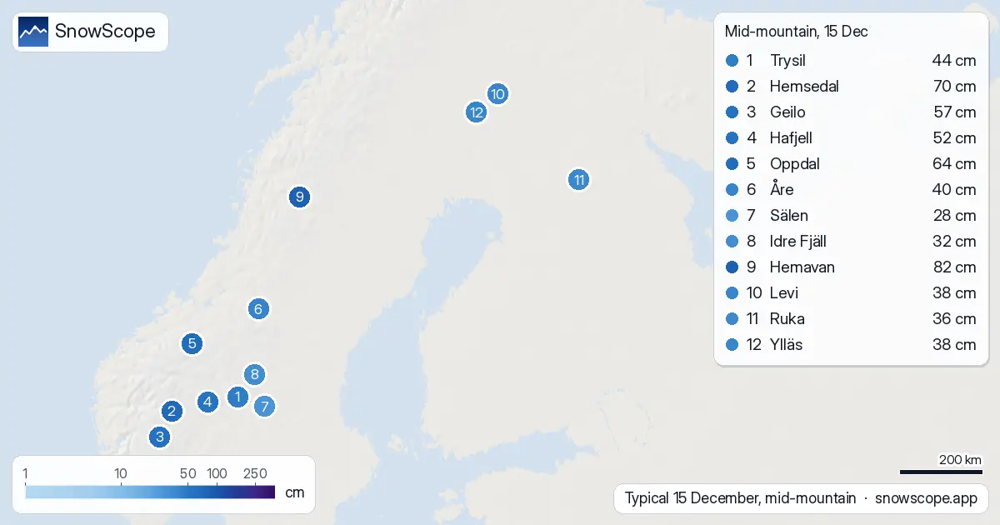

إسكندنافيا فدجنبر: نهار مظلم، تلج مضمون، وشحال كيسوا
إسكندنافيا كتبيع دجنبر بالبرد والضمان، والتاريخ ديالنا ديال 46 شتوة غالبا كيعطيها الحق. فسيمانة 15 حتى 21 دجنبر، الوسط كان فيه 30 سم ولا كثر فكل شتوة ف Hemavan، ف 98 % ف Hemsedal و 96 % ف Geilo و Oppdal. المقابل: نهار قصير ومظلم، وفالنرويج والسويد أثمنة كتبدل حسب التاريخ.
شوف توقعات التلج مباشرة ديال Scandinavia in December فالتطبيق ديال SnowScopeالعلو ديال التلج، التنبيهات والخريطة 3D، فابور.الترتيب ديال التلج
المجموعة اللولة، تقريبا مضمونة فنص دجنبر فالوسط: Hemavan (9) 100 %، Hemsedal (2) 98 %، Geilo (3) و Oppdal (5) 96 %. Hemavan هي حتى الأعمق، ب 82 سم نهار 15 دجنبر عادي.
مجموعة صحيحة: Åre (6) 89 %، Ylläs (12) 87 %، Hafjell (4) 85 %، Trysil (1) و Levi (10) 83 %. الأضعف: Ruka (11) 72 %، Idre Fjäll (8) 65 % و Sälen (7) 48 %، فين دجنبر بالتلج الطبيعي تقريبا قرعة.

النهار المظلم، بصراحة
كل ما طلعتي للشمال، النهار كيقصار. فجنوب النرويج والسويد، دجنبر مازال كيعطي شي ساعات ديال الضو بصح؛ ف Lapland الفنلندية، Levi و Ylläs كيكونو فالليل القطبي فجزء من دجنبر، فاش الشمش ما كتطلعش. زوين بزاف، ولكن معناه ساعات سكي قل وبيستات أبرد. نظم النهار على حساب الضو ولبس للبرد القاسح.
شحال كيسوا
فنلندا هي الجزء الساهل: أثمنة ثابتة. Levi ب 60 EUR للنهار للكبار (57 EUR أونلاين إلا حجزتي 14 يوم قبل على الأقل)، Ruka ب 58 EUR للنهار و 265 EUR ل 6 أيام، Ylläs ب 60 EUR للنهار (55,50 EUR حتى ل 11 دجنبر) و 254,50 EUR ل 7 أيام فالموسم الهادي. Geilo فالنرويج كتبين النهار من 590 NOK، تقريبا 56 EUR بسعر الصرف المرجعي ديال 12 نونبر.
ل Trysil و Hemsedal و Hafjell و Oppdal و Åre و Sälen و Idre Fjäll و Hemavan ما قدرناش نقراو حتى ثمن ثابت فالصفحات الرسمية نهار 13 نونبر 2026: الأثمنة كتحدد حسب التاريخ فالحوانت أونلاين. كنفضلو ما نعطيو حتى رقم على ما نخمنو.
الاتجاهات: الشمال صامد، الجنوب كيتزلق
النسبة ديال سيمانات نوال اللي فيهم 30 سم فالوسط فآخر 15 شتوة هي 100 % ف Hemsedal و Geilo و Hemavan و Levi و Ylläs، و 93 % ف Oppdal و Ruka. للجنوب وهابط كثر نزلات: Sälen 47 %، Idre Fjäll 60 %، Trysil و Åre 80 %.
ف Levi التلج ديال دجنبر حتى زاد شوية؛ وفالتلال الهابطة ديال Dalarna نقص.
كيفاش تختار
تلج مضمون، ميزانية صغيرة وثمن معروف: Levi، Ylläs ولا Ruka، و 265 EUR ديال Ruka ل 6 أيام هو أوضح ثمن ديال السيمانة. تلج مضمون مع فرق علو كبير: Hemsedal ولا Oppdal، حجز بكري حيت الأثمنة كتحرك. أعمق تلج والهدوء: Hemavan. بعد من بداية دجنبر ف Sälen و Idre، إلا إلا كان الحجز كيتلغى.
نصايح للي كيتزلجو
- إلا بغيتي ثمن ثابت تخطط بيه، ختار فنلندا: Levi و Ylläs و Ruka كينشرو أثمنة ثابتة للنهار وللسيمانة.
- فالنرويج والسويد شري السكيباس أونلاين وبكري؛ الأثمنة كتبدل مع التاريخ.
- فالمحطات ديال الجنوب ختار نص دجنبر ولا من بعد؛ ف Lapland التلج منتظم كثر من بداية دجنبر.
- النهار قصير: بدا مع أول ضو، خلي الغدا قصير، وقرا التوقعات الوطنية ديال الانهيارات قبل ما تخرج من البيست.
المراجع والمصادر
- Trysil: official lift-pass page of the operator (prices by date; no fixed price quoted), checked 13 November 2026 www.skistar.com/en/winter/skipass/buy-skipass/lift-pass-trysil/
- Hemsedal: official lift-pass page of the operator (prices by date; no fixed price quoted), checked 13 November 2026 www.skistar.com/en/winter/skipass/buy-skipass/lift-pass-hemsedal/
- Geilo: official lift-pass prices (2026-27), checked 13 November 2026 www.skigeilo.no/en/ski-pass
- Hafjell: official lift-pass page of the operator (prices by date; no fixed price quoted), checked 13 November 2026 www.alpinco.com/en/hafjell/buy-day-pass-1-8-days
- Oppdal: official lift-pass page of the operator (prices by date; no fixed price quoted), checked 13 November 2026 www.alpinco.com/en/oppdal/buy-day-pass-1-8-days
- Åre: official lift-pass page of the operator (prices by date; no fixed price quoted), checked 13 November 2026 www.skistar.com/en/winter/skipass/buy-skipass/lift-pass-are/
- Sälen: official lift-pass page of the operator (prices by date; no fixed price quoted), checked 13 November 2026 www.skistar.com/en/winter/skipass/buy-skipass/lift-pass-salen/
- Idre Fjäll: official lift-pass page of the operator (prices by date; no fixed price quoted), checked 13 November 2026 www.idrefjall.se/en/about-us/information/prices/
- Hemavan: official lift-pass page of the operator (prices by date; no fixed price quoted), checked 13 November 2026 tarnabyalpint.se/en/book/lift-pass/price-list/
- Levi: official lift-pass prices (2026-27), checked 13 November 2026 www.levi.fi/en/ski/levi-ski-resort-services/skipasses/
- Ruka: official lift-pass prices (2026-27), checked 13 November 2026 www.ruka.fi/en/shop/skipasses
- Ylläs: official lift-pass prices (2026-27), checked 13 November 2026 ski.yllas.fi/en/lift-tickets/yllas-lift-ticket-price-list/
- European Central Bank euro reference rates (2026-11-12) www.ecb.europa.eu/stats/policy_and_exchange_rates/euro_reference_exchange_rates/html/index.en.html
على هاد الأرقام
الأرقام ديال التلج: التاريخ ديال التلج ديال SnowScope، 46 شتوة اللي فاتت (1980-81 حتى ل 2025-26) فالعلوات ديال المحطة، مصحح بالعلو (تقدير لمنطقة، ماشي البلاغات ديال المحطة)؛ «تلج مزيان» = 30 سم ولا كثر فالأرض فالمعدل ديال السيمانة. الخريطة: العلو العادي ديال التلج نهار 15 دجنبر موزع على التضاريس حسب العلو. البيستات والتيليسييجات: OpenSkiMap. الأثمنة ديال السكيباس: اللوائح الرسمية ديال المحطات، متشافة نهار 13 نونبر 2026؛ الأثمنة تقدر تتبدل.
كيفاش تستاشهد بهاد المقال
للبحث، التعليم ولا الصحافة: الأرقام والرسومات تقدر تعاود تخدم بيهم بحرية تحت CC BY 4.0 مع هاد الاستشهاد.
SnowScope (2026), إسكندنافيا فدجنبر: نهار مظلم، تلج مضمون، وشحال كيسوا, https://snowscope.app/blog/ar/2026/11/scandinavia-december-skiing-dark-days-sure-snow-cost.html, تشاف ف 2026-11-14
SnowScope (Atlas Labs). (2026, November 14). إسكندنافيا فدجنبر: نهار مظلم، تلج مضمون، وشحال كيسوا. SnowScope snow reports. https://snowscope.app/blog/ar/2026/11/scandinavia-december-skiing-dark-days-sure-snow-cost.html
BibTeX
@misc{snowscope2026scandinaviadecemberskiin,
author = {{SnowScope (Atlas Labs)}},
title = {إسكندنافيا فدجنبر: نهار مظلم، تلج مضمون، وشحال كيسوا},
year = {2026},
month = nov,
howpublished = {\url{https://snowscope.app/blog/ar/2026/11/scandinavia-december-skiing-dark-days-sure-snow-cost.html}},
note = {Published 2026-11-14 13:29 UTC; accessed 2026-11-14}
}· CC BY 4.0 · الطريقة، الداتا والأدوات →
تابع Scandinavia in December
فابور: ميساج ملي يجي التلج، والتوقعات كل صباح.